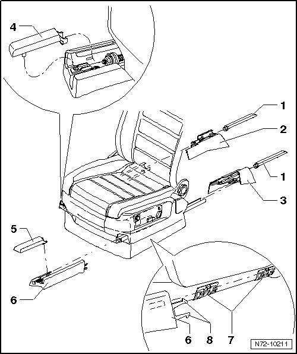
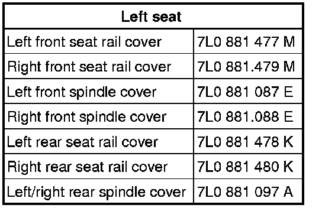
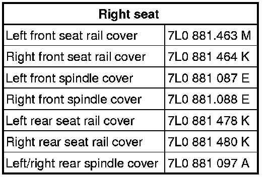

Seat Rail Covers
Front Seats
Seat Rail Covers
• Removal and installation is described for the left-hand side of the vehicle. Removal and installation for the right-hand side is performed in the same manner.
Removing
- Position seat into the front-most position via the fore/aft adjustment.
- Position seat as far up as possible using height adjustment.
- Using a small screwdriver, pry rear spindle covers - 1 - out of mounts.
- Pull seat rail covers - 2 - and - 3 - back from seat rails.
• If the lower parts of the seat rail covers remain stuck on the rails during removal, these must be pulled off and slid into the seat rail covers before installation.
- Position the front seats as far back as possible using the seat longitudinal adjuster.
- Removal of front covers - 4 -, - 5 - and - 6 - is the same.

Installing
CAUTION!
The old version of the spindle covers and seal rail covers can only be installed once, due to the materials and geometry.
The spindle covers and seat rail covers should be replaced when they have indexes that are older than those given in the following table.


Spindle covers and seat rail covers with a new index can be removed and installed several times.
- Perform the steps used for removal in reverse order.
• When installing, guide grooves in seat rail covers must be slide into retaining clamps - 7 - on inner and outer sides.
• After installation, ensure hooks - 8 - engage in corresponding rear seat rail covers.